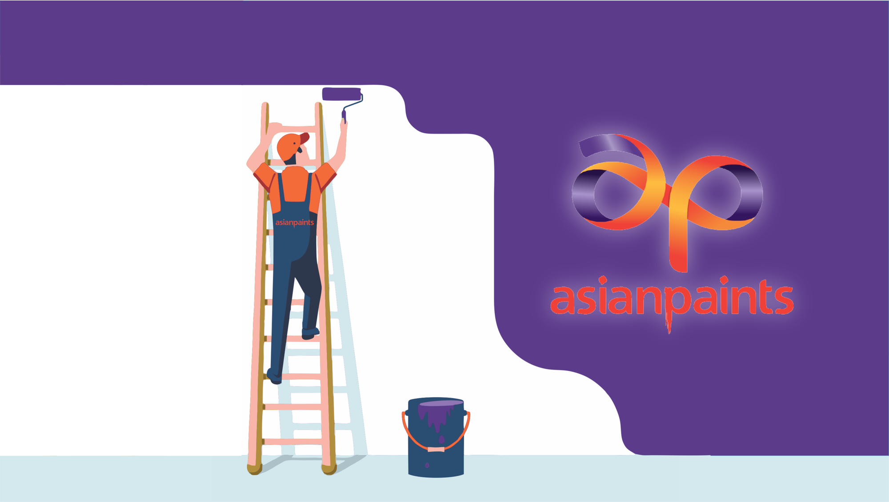

Every campaign factor scored, explained, and benchmarked. The most detailed professional rating breakdown of Asian Paints' two landmark campaigns.

Asian Paints is one of India's most successful examples of emotional brand storytelling. Its campaigns "Har Ghar Kuch Kehta Hai" and "Where the Heart Is" transformed a paint company into a brand associated with emotion, aspiration, and home identity.
This report goes beyond the summary. Every one of the 20 professional campaign factors is scored individually — with a clear explanation of why each factor received its rating. The scoring framework covers six strategic pillars: Strategy Foundation, Offer & Message, Content & Creatives, Channel & Distribution, Funnel & System, and Data & Scaling.
The purpose of this deep-analysis format is to give founders, marketers, and brand teams a transparent, replicable framework for understanding what makes a campaign exceptional — and where even great campaigns have room to grow.
Asian Paints succeeded because it mastered three disciplines simultaneously: emotional storytelling, aspirational content, and omnichannel branding consistency. The 20-factor analysis proves that no single element drove the success — it was the combined strength across all pillars.
The highest-scoring factors — Core Hook (10/10), Copywriting (9.8), Positioning (9.8), Content Formats (9.8) — reveal a clear pattern: the brand's biggest strengths are all in message and creative. This is not accidental. Asian Paints invested in strategic clarity before creative execution.
For brands looking to replicate this success, the lesson is clear: define your emotional territory first. Own a human truth. Then build every creative decision to serve that truth with obsessive consistency over years — not quarters.
At Brand Business Talk, we help brands with research, strategy, market insights, and growth recommendations. Let's build your brand growth strategy together.